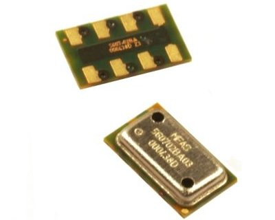
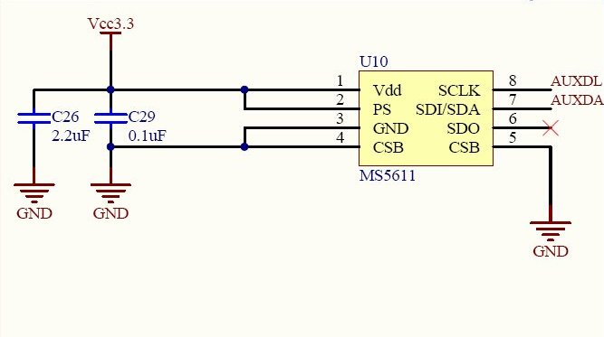
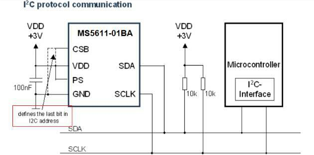
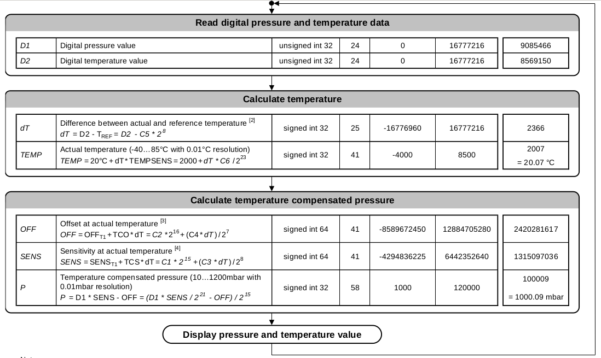
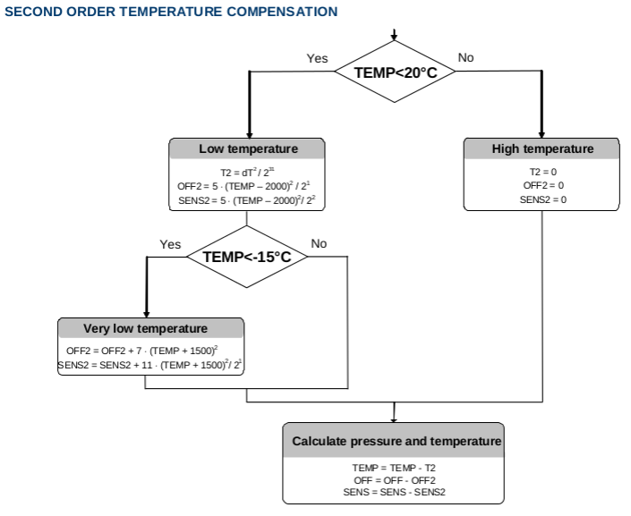

Crazepony使用氣壓計（或者叫高度計）MS5611。
MS5611氣壓傳感器是由MEAS（瑞士）推出的SPI和I²C總線接口的新一代高分辨率氣壓傳感器，分辨率可達到10cm。我們使用的I2C接口，掛在MPU5060的從I2C接口上。MS5611有2種型號的封裝MS5611-01BA03(金屬封裝) 和MS5611-01BA01(塑殼封裝），我們使用的金屬封裝。

MS5611的I2C地址為0b111011Cx，其中C比特位由CSB引腳決定，為CSB引腳的補碼值（取反）。Crazepony上MS5611的CSB引腳接地，所以CSB引腳值為0，8位I2C地址為0b1110111x（0xEE），7位I2C地址為0b1110111（0x77）。


下面以I2C連接模式講解，符合Crazepony硬件上的連接。對MS5611芯片操作，只有5個命令。
復位MS5611芯片，寫入一個字節0x1E即可。
IICwriteOneByte( ms5611Address, 0x1E); // Reset Device
MS5611氣壓傳感器在出廠的時候，將該片IC對應的6個係數寫在了內部寄存器（PROM）中，讀取該係數，用於後面對實際溫度和實際氣壓的計算。
內部寄存器的位置分別為0xA2/0xA4/0xA6/0xA8/0xAA/0xAC/0xAE，只需要對該位置讀取2個字節則可。
IICreadBytes( ms5611Address, 0xA2, 2, data); // Read Calibration Data C1
c1.bytes[1] = data[0];
c1.bytes[0] = data[1];
IICreadBytes( ms5611Address, 0xA4, 2, data); // Read Calibration Data C2
c2.bytes[1] = data[0];
c2.bytes[0] = data[1];
IICreadBytes( ms5611Address, 0xA6, 2, data); // Read Calibration Data C3
c3.bytes[1] = data[0];
c3.bytes[0] = data[1];
IICreadBytes( ms5611Address, 0xA8, 2, data); // Read Calibration Data C4
c4.bytes[1] = data[0];
c4.bytes[0] = data[1];
IICreadBytes( ms5611Address, 0xAA, 2, data); // Read Calibration Data C5
c5.bytes[1] = data[0];
c5.bytes[0] = data[1];
IICreadBytes( ms5611Address, 0xAC, 2, data); // Read Calibration Data C6
c6.bytes[1] = data[0];
c6.bytes[0] = data[1];
D1轉化即氣壓轉化，告知IC進行氣壓轉化，下一步就可以讀取氣壓值（24位）。如果OSR為4096，則寫入0x48即可。
IICwriteOneByte( ms5611Address, 0x48);
D2轉化即溫度轉化，告知IC進行溫度轉化，下一步就可以讀取溫度值（24位）。如果OSR為4096，則寫入0x58即可。
IICwriteOneByte( ms5611Address, 0x58);
ADC值即上面進行的D1轉化或者D2轉化，為24位數值。對0x00讀取3個字節即可。
IICreadBytes( ms5611Address, 0x00, 3, data); // Request temperature read
上面這5個命令，是對ms5611操作的所有命令了。我們可以獲得6個係數（只需要在初始化時讀取一遍即可），然後就是傳感器測量到的溫度數值和氣壓數值。下面就是要對讀到的氣壓值和溫度值進行計算，獲得真實的氣壓（帕斯卡）和溫度（攝氏度）。
首先看ms5611出廠時已經確定的6個係數：
上面6個係數為出廠時已經確定，為16位數值。不同的MS5611芯片會不相同，但是同一片芯片是固定的，只需要在初始化時讀取一遍，用於後面的計算。
進行D1和D2轉化，獲得氣壓數值d1和溫度數值d2，為24位數值。
得到了上面8個值之後，就可以計算當前的實際溫度和實際氣壓了。計算過程如下。

二階溫度補償
不同溫度對大氣壓強測量有著很大影響，MS5611手冊提供有二階溫度補償的方法。如果溫度低於20攝氏度，則進行二階溫度補償。

智能手機
氣壓傳感器首次在智能手機上使用是在Galaxy Nexus上，而之後推出的一些Android旗艦手機裡也包含了這一傳感器，像GalaxySIII、GalaxyNote2和小米2手機上也都有。
登山測高
對於喜歡登山的人來說，都會非常關心自己所處的高度。海拔高度的測量方法，一般常用的有2種方式，一是通過GPS全球定位系統，二是通過測出大氣壓，然後根據氣壓值計算出海拔高度。
導航輔助
現在不少開車人士會用手機來進行導航，不過常常會有人抱怨在高架橋裡導航常常會出錯 。比如在高架橋上時，GPS說右轉，而實際上右邊根本沒有右轉出口，這主要是GPS無法判斷你是橋上還是橋下而造成的錯誤導航。一般高架橋上下兩層的高度都會有幾米到十幾米的距離了，而GPS的誤差可能會有幾十米，所以發生上面的事情也就可以理解了。
而如果手機裡增加一個氣壓傳感器就不一樣了，他的精度可以做到1米的誤差，這樣就可以很好的輔助GPS來測量出所處的高度，錯誤導航的問題也就容易解決了。
室內定位
由於在室內無法很好的接收GPS信號，所以當使用者進入一幢很厚的樓宇時，內置感應器可能會失去衛星的信號，所以無法識別用戶的地理位置，並且無法感知垂直高度。而如果手機加上氣壓傳感器再配合加速計、陀螺儀等技術就可以做到精準的室內定位。這樣以後你在商場購物時，就可以通過手機定位來告訴你你想購買的產品在商場的那個位置，哪一層樓。
漁具
另外氣壓傳感器還可以為釣魚愛好者提供相關信息（魚在水中分層及活躍性與大氣壓相關）或天氣預報等功能。
不過目前氣壓傳感器還處於一個被忽略的狀態，氣壓傳感器要想被更多人瞭解和使用還需要一些相關技術的成熟和普及，以及更多的開發者針對這一傳感器推出更多的應用和相關功能。